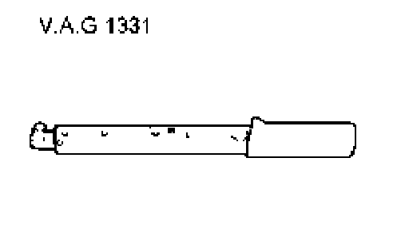
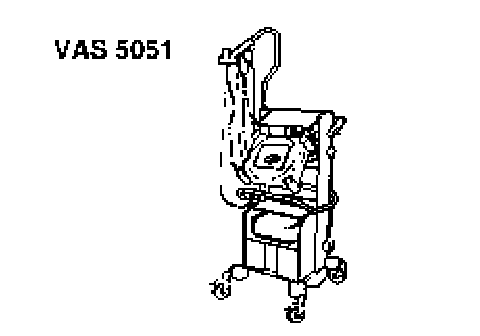
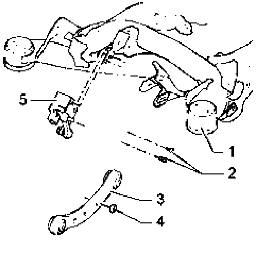

Left and Right Rear Level Control System Sensors G76/G77, Removing and Installing
Left and right rear level control system sensors G76/G77, removing and installing
Special tools, testers and auxiliary items required

^ Torque wrench V.A.G 1331

^ Vehicle diagnostics, measurement and information system VAS 5051

Assembly overview
1. Subframe
2. Internal hex bolt, 5 Nm
3. Control arm, upper front
4. Self-locking nut 8 Nm
5. Left/Right rear level control system sensor G76/G77
Removing
- Raise vehicle.
- Disconnect electrical connection at Left/Right rear level control system sensor G76/G77.
- Remove bolts - 2 - and nut - 4 - and remove Left/Right rear level control system sensor G76/G77
Installing
- Install Left/Right rear level control system sensor G76/G77 to subframe using bolts - 2 -.
- Attach ball joint pin to upper front control arm using new nut - 4 -.
The joint between the lever of Left/Right rear level control system sensor G76/G77 and connecting link must point downward.
- Tighten all bolts to specified torque.
- Lower vehicle onto its wheels.
- Perform basic setting for Left/Right rear level control system sensor G76/G77 with the vehicle diagnosis, testing and information system VAS 5051. Testing and Inspection